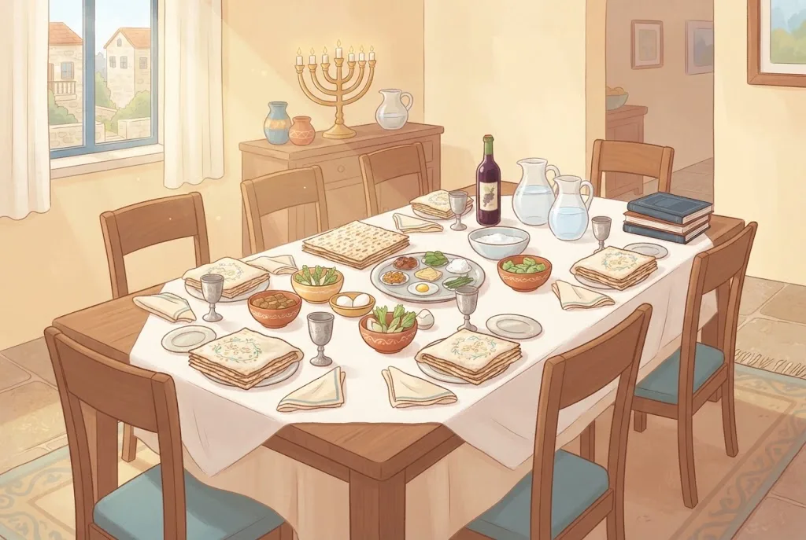
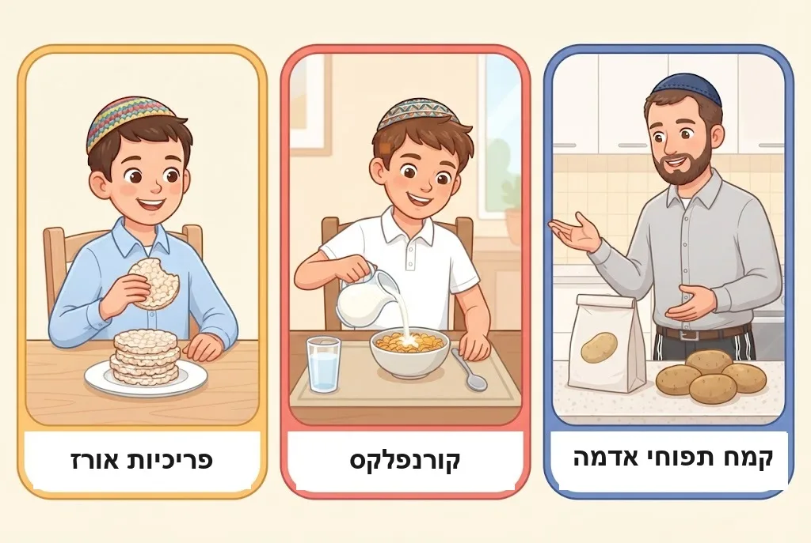
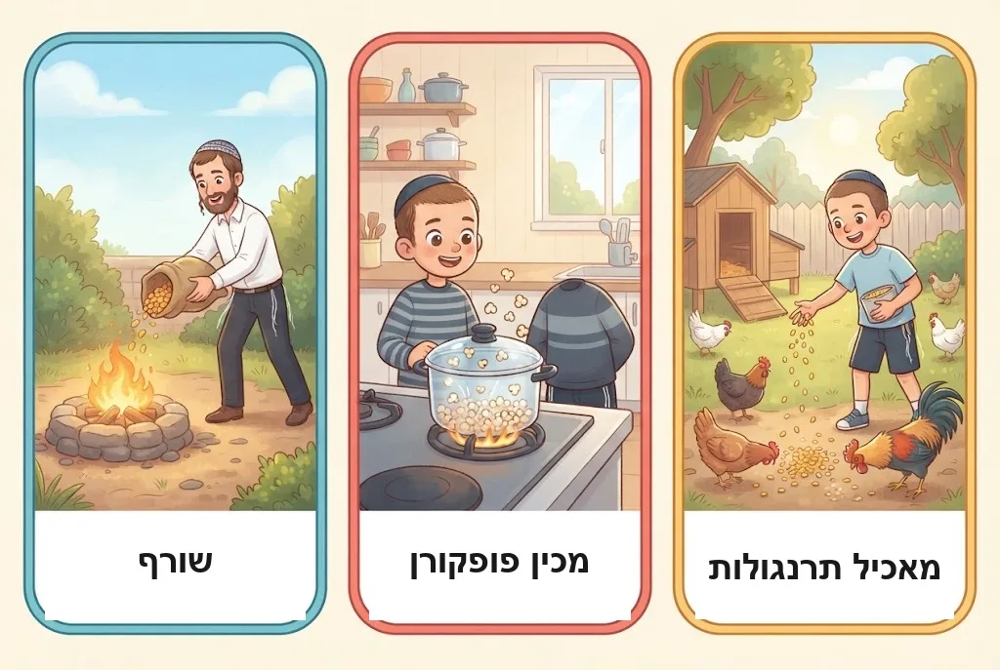
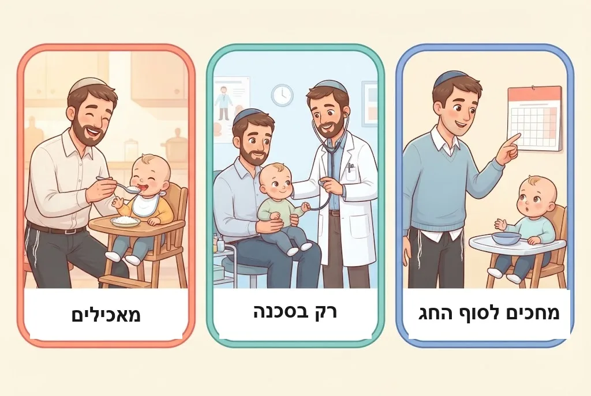

בְּפֶסַח, בַּבַּיִת שֶׁל דָּוִד אוֹכְלִים אֹרֶז וְחוּמוּס, וּבַבַּיִת שֶׁל יוֹסִי – לֹא נוֹגְעִים בָּהֶם. מִי צוֹדֵק? שְׁנֵיהֶם! בַּפֶּרֶק הַזֶּה נִלְמַד מָה הֵן ״קִטְנִיּוֹת״, לָמָּה הָאַשְׁכְּנַזִּים לֹא אוֹכְלִים אוֹתָן, לָמָּה רֹב הַסְּפָרַדִּים כֵּן אוֹכְלִים – וְאֵיךְ מִשְׁפָּחוֹת וַחֲבֵרִים עִם מִנְהָגִים שׁוֹנִים יוֹשְׁבִים יַחַד בְּשִׂמְחָה.
1אֹרֶז אֵינוֹ חָמֵץ
חָמֵץ מִן הַתּוֹרָה הוּא רַק מֵחֲמֵשֶׁת מִינֵי דָּגָן: חִטָּה, שְׂעוֹרָה, כֻּסְּמִין, שִׁבֹּלֶת שׁוּעָל וְשִׁיפוֹן. אֹרֶז וְדֹחַן – גַּם אִם הֵם תּוֹפְחִים, אֵין בָּהֶם חִמּוּץ כְּמוֹ בַּדָּגָן, וּמֻתָּר לֶאֱכֹל אוֹתָם בְּפֶסַח. כָּךְ נָהֲגוּ גְּדוֹלֵי הַתַּנָּאִים וְהָאָמוֹרָאִים, וּמְסֻפָּר עַל רָבָא שֶׁהָיָה אוֹכֵל אֹרֶז בְּלֵיל הַסֵּדֶר.
🤔 לָמָּה? רַק תַּנָּא אֶחָד, רַבִּי יוֹחָנָן בֶּן נוּרִי, סָבַר שֶׁאֹרֶז הוּא כְּמוֹ דָּגָן. שְׁאָר חַכְמֵי יִשְׂרָאֵל חָלְקוּ עָלָיו, וַהֲלָכָה כְּמוֹתָם.
(פֶּרֶק ט׳, הֲלָכָה א׳)
2מִנְהַג אַשְׁכְּנַז
לִפְנֵי כִּשְׁבַע מֵאוֹת שָׁנָה הִתְחִילוּ בְּאַשְׁכְּנַז לְהַחְמִיר וְלֹא לֶאֱכֹל קִטְנִיּוֹת בְּפֶסַח. בַּהַתְחָלָה נָהֲגוּ כָּךְ רַק בִּקְהִלּוֹת אֲחָדוֹת, וּבְמֶשֶׁךְ כַּמָּה דּוֹרוֹת הַמִּנְהָג הִתְפַּשֵּׁט בְּכָל קְהִלּוֹת אַשְׁכְּנַז.
(פֶּרֶק ט׳, הֲלָכָה א׳)
3לָמָּה? שְׁלוֹשָׁה טְעָמִים
חֲכָמִים נָתְנוּ שְׁלוֹשָׁה טְעָמִים לַמִּנְהָג. א. מְבַשְּׁלִים קִטְנִיּוֹת בְּסִיר כְּמוֹ דָּגָן, וְחָשְׁשׁוּ שֶׁיִּתְבַּלְבְּלוּ וִיבַשְּׁלוּ גַּם דָּגָן. ב. גַּם מִקִּטְנִיּוֹת עוֹשִׂים קֶמַח, וְחָשְׁשׁוּ שֶׁמִּי שֶׁאֵינוֹ בָּקִי יִרְאֶה אוֹפִים מִקֶּמַח קִטְנִיּוֹת, וְיֶאֱפֶה גַּם מִקֶּמַח דָּגָן וְיַחְמִיץ. ג. גַּרְגְּרֵי חִטָּה וּשְׂעוֹרָה מִתְעָרְבִים לִפְעָמִים בְּתוֹךְ הַקִּטְנִיּוֹת, וּכְשֶׁמְּבַשְּׁלִים – הֵם מַחְמִיצִים.
🤔 לָמָּה? הַחֲשָׁשׁ הַשְּׁלִישִׁי קַיָּם גַּם הַיּוֹם: בְּאוֹתָן מְכוֹלוֹת שׁוֹמְרִים פַּעַם דָּגָן וּפַעַם קִטְנִיּוֹת. וּבַשָּׂדוֹת מְגַדְּלִים שָׁנָה דָּגָן וְשָׁנָה קִטְנִיּוֹת, וְתָמִיד צוֹמְחִים גַּם קְצָת זְרָעִים מֵהַשָּׁנָה הַקּוֹדֶמֶת. כְּשֶׁבּוֹדְקִים – בֶּאֱמֶת מוֹצְאִים דָּגָן בֵּין הַקִּטְנִיּוֹת.
(פֶּרֶק ט׳, הֲלָכָה א׳)

4שְׁנֵי מִנְהָגִים – וּשְׁנֵיהֶם כַּהֲלָכָה
בִּתְקוּפַת הָרִאשׁוֹנִים, בְּכָל קְהִלּוֹת הַסְּפָרַדִּים אָכְלוּ קִטְנִיּוֹת וְאֹרֶז בְּפֶסַח, וְרַק הִקְפִּידוּ לִבְרֹר אוֹתָם הֵיטֵב. רַבִּי יוֹסֵף קָארוֹ כָּתַב שֶׁרַק הָאַשְׁכְּנַזִּים חוֹשְׁשִׁים לַדְּבָרִים הָאֵלֶּה.
🤔 לָמָּה? כָּל אֶחָד מַמְשִׁיךְ בְּמִנְהַג אֲבוֹתָיו. שְׁנֵי הַמִּנְהָגִים שׁוֹמְרִים עַל אִסּוּר הֶחָמֵץ – זֶה בִּזְהִירוּת וּבְרִירָה, וְזֶה בְּהַרְחָקָה.
🔀 שְׁנֵי מִנְהָגִים – וּשְׁנֵיהֶם כַּהֲלָכָה
לְמִנְהַג הָאַשְׁכְּנַזִּים לֹא אוֹכְלִים קִטְנִיּוֹת בְּפֶסַח.
לְמִנְהַג רֹב הַסְּפָרַדִּים אוֹכְלִים קִטְנִיּוֹת וְאֹרֶז, וּבוֹרְרִים אוֹתָם הֵיטֵב, שֶׁלֹּא יִהְיוּ בֵּינֵיהֶם גַּרְגְּרֵי דָּגָן.
💛 גַּם כְּשֶׁאֲנַחְנוּ נוֹהֲגִים אַחֶרֶת – כֻּלָּנוּ עוֹשִׂים אֶת אוֹתוֹ דָּבָר: שׁוֹמְרִים בְּאַהֲבָה עַל מִצְווֹת ה׳.
(פֶּרֶק ט׳, הֲלָכָה ב׳)
5גַּם בֵּין הַסְּפָרַדִּים יֵשׁ מַחְמִירִים בְּאֹרֶז
יֵשׁ קְהִלּוֹת סְפָרַדִּיּוֹת שֶׁנָּהֲגוּ לֹא לֶאֱכֹל אֹרֶז בְּפֶסַח – כְּמוֹ בְּאִיזְמִיר, וְרַבִּים בְּמָרוֹקוֹ וּבְבַגְדָּד. מִי שֶׁאוֹכֵל אֹרֶז בְּפֶסַח – קוֹנֶה אֹרֶז עִם הַשְׁגָּחָה מְיֻחֶדֶת לְפֶסַח, אוֹ בּוֹדֵק אוֹתוֹ הֵיטֵב שָׁלֹשׁ פְּעָמִים. וְתַבְלִינִים כְּמוֹ כַּמּוֹן וְחִלְבָּה – בּוֹדְקִים הֵיטֵב, כִּי פְּעָמִים רַבּוֹת מְעֹרָבִים בָּהֶם גַּרְגְּרֵי דָּגָן.
🤔 לָמָּה? הָיָה מַעֲשֶׂה שֶׁבֵּרְרוּ אֹרֶז כַּמָּה פְּעָמִים, וּבְכָל זֹאת נִמְצְאָה חִטָּה בַּתַּבְשִׁיל. וְהַיּוֹם אֹרֶז נֶאֱרָז בְּאוֹתָם מְקוֹמוֹת שֶׁאוֹרְזִים קֶמַח וְסֹלֶת. הַנָּכוֹן שֶׁכָּל אֶחָד יַמְשִׁיךְ בְּמִנְהַג אֲבוֹתָיו, וּבְסָפֵק – שׁוֹאֲלִים רַב.
(פֶּרֶק ט׳, הֲלָכָה ב׳)

6אִמָּא מֵאַשְׁכְּנַז, אַבָּא מִסְּפָרַד
בְּמִשְׁפָּחָה שֶׁבָּהּ הָאִמָּא בָּאָה מִבַּיִת שֶׁלֹּא אוֹכְלִים בּוֹ קִטְנִיּוֹת, וְהָאַבָּא מִבַּיִת שֶׁאוֹכְלִים – הָאִמָּא נוֹהֶגֶת כְּמִנְהַג הָאַבָּא, וּמֻתֶּרֶת לֶאֱכֹל קִטְנִיּוֹת, בְּלִי הַתָּרַת נְדָרִים. כָּךְ גַּם מִי שֶׁעוֹבֵר לָגוּר לְתָמִיד בְּמָקוֹם שֶׁנּוֹהֲגִים בּוֹ אַחֶרֶת – נוֹהֵג כְּמִנְהַג הַמָּקוֹם הֶחָדָשׁ.
🤔 לָמָּה? אִי אֶפְשָׁר שֶׁבְּנֵי מִשְׁפָּחָה יֵשְׁבוּ תָּמִיד לְיַד שֻׁלְחָן אֶחָד, וּמָה שֶׁמֻּתָּר לָזֶה – אָסוּר לָזֶה. כָּךְ כָּתַב אֶחָד מִגְּדוֹלֵי הָרִאשׁוֹנִים, הַתַּשְׁבֵּ״ץ, וְכָךְ הִסְבִּיר גַּם הָרַב מֹשֶׁה פַיינְשְׁטֵיין.
💛 שֻׁלְחָן אֶחָד שֶׁכָּל הַמִּשְׁפָּחָה יוֹשֶׁבֶת סְבִיבוֹ יַחַד – זֶה בְּדִיּוּק מָה שֶׁה׳ רוֹצֶה בְּלֵיל הַסֵּדֶר.
(פֶּרֶק ט׳, הֲלָכָה ג׳)

7מָה כָּלוּל בַּמִּנְהָג?
הַקִּטְנִיּוֹת הַמֻּכָּרוֹת הֵן: אֹרֶז, תִּירָס, חוּמוּס, שְׁעוּעִית, עֲדָשִׁים, אֲפוּנָה, פּוֹל, סוֹיָה, שֻׁמְשֹׁם, חַמָּנִיּוֹת (גַּרְעִינִים שְׁחוֹרִים), כֻּסֶּמֶת, דֹּחַן, חִלְבָּה וְכַמּוֹן. גַּם מוּצָרִים שֶׁעֲשׂוּיִים מֵהֶן כְּלוּלִים בַּמִּנְהָג – כְּמוֹ קוֹרְנְפְלֶקְס וּפְרִיכִיּוֹת אֹרֶז. חַרְדָּל וּפִשְׁתָּן אֵינָם קִטְנִיּוֹת, אֲבָל נָהֲגוּ לֶאֱסֹר אוֹתָם, כִּי הֵם גְּדֵלִים בְּתַרְמִילִים כְּמוֹ קִטְנִיּוֹת.
(פֶּרֶק ט׳, הֲלָכָה ד׳)
8מָה אֵינוֹ קִטְנִיּוֹת?
קֶמַח תַּפּוּחֵי אֲדָמָה – מֻתָּר בְּפֶסַח. גַּם כֻּרְכּוּם מֻתָּר. וּמָה עִם קִינוֹאָה?
🤔 לָמָּה? רַק מָה שֶׁגְּדוֹלֵי אַשְׁכְּנַז נָהֲגוּ לֶאֱסֹר בְּפֹעַל נִכְלָל בַּמִּנְהָג. כְּשֶׁהַמִּנְהָג הִתְחִיל לֹא הָיוּ תַּפּוּחֵי אֲדָמָה בְּאֵירוֹפָּה – וְלָכֵן הֵם מֻתָּרִים. וְאֶת הַקִּינוֹאָה הִתְחִילוּ לֶאֱכֹל רַק בַּדּוֹר הָאַחֲרוֹן, וְהַגַּרְגְּרִים שֶׁלָּהּ קְטַנִּים בְּהַרְבֵּה מִדָּגָן, כָּךְ שֶׁקַּל לְהַבְדִּיל בֵּינֵיהֶם.
🔀 שְׁנֵי מִנְהָגִים – וּשְׁנֵיהֶם כַּהֲלָכָה
יֵשׁ מַחְמִירִים לֹא אוֹכְלִים קִינוֹאָה, כִּי הִיא דּוֹמָה לְקִטְנִיּוֹת.
וְיֵשׁ מְקִלִּים, וְכָךְ הָעִקָּר מֻתָּר לֶאֱכֹל קִינוֹאָה, בִּתְנַאי שֶׁבּוֹרְרִים אוֹתָהּ הֵיטֵב.
(פֶּרֶק ט׳, הֲלָכָה ד׳)

9בּוֹטְנִים
בְּבוֹטְנִים נֶחְלְקוּ הַמִּנְהָגִים:
🤔 לָמָּה? מִי שֶׁאֵינוֹ יוֹדֵעַ מָה נָהֲגוּ בְּמִשְׁפַּחְתּוֹ – רַשַּׁאי לֶאֱכֹל.
🔀 שְׁנֵי מִנְהָגִים – וּשְׁנֵיהֶם כַּהֲלָכָה
בִּירוּשָׁלַיִם וּבִמְקוֹמוֹת רַבִּים נִמְנְעוּ מִלֶּאֱכֹל בּוֹטְנִים בְּפֶסַח.
בְּלִיטָא נָהֲגוּ לֶאֱכֹל בּוֹטְנִים.
(פֶּרֶק ט׳, הֲלָכָה ד׳)
10קִטְנִיּוֹת בַּבַּיִת
גַּם מִי שֶׁלֹּא אוֹכֵל קִטְנִיּוֹת רַשַּׁאי לְהַשְׁאִיר אוֹתָן בַּבַּיִת בְּפֶסַח, וּלְהַאֲכִיל בָּהֶן בַּעֲלֵי חַיִּים – כְּמוֹ תַּרְנְגוֹלוֹת. מֻתָּר לוֹ לְבַשֵּׁל קִטְנִיּוֹת לְמִי שֶׁאוֹכֵל אוֹתָן, וְטוֹב שֶׁיַּעֲשֶׂה סִימָן שֶׁהוּא לֹא מְבַשֵּׁל לְעַצְמוֹ. וּמֻתָּר לוֹ לְבַשֵּׁל וְלֶאֱכֹל בְּסִירִים נְקִיִּים שֶׁבִּשְּׁלוּ בָּהֶם קִטְנִיּוֹת.
🤔 לָמָּה? מִנְהַג הַקִּטְנִיּוֹת אֵינוֹ חָמוּר כְּמוֹ אִסּוּר חָמֵץ. הוּא רַק מִנְהָג שֶׁלֹּא לֶאֱכֹל – לֹא אִסּוּר לְהַחְזִיק אוֹ לֵהָנוֹת.
(פֶּרֶק ט׳, הֲלָכָה ה׳)

11נָפְלוּ קִטְנִיּוֹת לַתַּבְשִׁיל
אִם נָפְלוּ גַּרְגְּרֵי קִטְנִיּוֹת לְתַבְשִׁיל שֶׁל פֶּסַח, אֵצֶל מִי שֶׁלֹּא אוֹכֵל קִטְנִיּוֹת – מוֹצִיאִים אֶת מָה שֶׁאֶפְשָׁר, וּמָה שֶׁאִי אֶפְשָׁר לְהוֹצִיא – בָּטֵל בָּרֹב, וְהַתַּבְשִׁיל מֻתָּר. אֲבָל אִם רֹב הַתַּבְשִׁיל קִטְנִיּוֹת – הוּא תַּבְשִׁיל שֶׁל קִטְנִיּוֹת, וּמִי שֶׁנּוֹהֵג לֹא לֶאֱכֹל קִטְנִיּוֹת – לֹא אוֹכֵל אוֹתוֹ.
(פֶּרֶק ט׳, הֲלָכָה ה׳)
12שְׁמָנִים וּמַמְתַּקִּים ״לְאוֹכְלֵי קִטְנִיּוֹת״
עַל שׁוֹקוֹלָד וּמַמְתַּקִּים רַבִּים כָּתוּב ״כָּשֵׁר לְפֶסַח לְאוֹכְלֵי קִטְנִיּוֹת בִּלְבַד״. מִן הַדִּין, גַּם מִי שֶׁלֹּא אוֹכֵל קִטְנִיּוֹת רַשַּׁאי לֶאֱכֹל אוֹתָם, אִם הַקִּטְנִיּוֹת שֶׁבָּהֶם הֵן מְעַט וּבְטֵלוֹת בָּרֹב. שֶׁמֶן כֻּתְנָה – הַמִּנְהָג לְהָקֵל. וְשֶׁמֶן סוֹיָה וְשֶׁמֶן קָנוֹלָה?
🤔 לָמָּה? הַקִּטְנִיּוֹת נִתְעָרְבוּ לִפְנֵי פֶּסַח וּבָטְלוּ, וּבְדֶרֶךְ כְּלָל מְדֻבָּר בְּשֶׁמֶן שֶׁיּוֹצֵא מֵהֶן – וְכַמָּה מִגְּדוֹלֵי הַפּוֹסְקִים אָמְרוּ שֶׁהַמִּנְהָג לֹא חָל עַל שֶׁמֶן קִטְנִיּוֹת. גּוּפֵי הַכַּשְׁרוּת כּוֹתְבִים ״לְאוֹכְלֵי קִטְנִיּוֹת״ כִּי יֵשׁ מַחְמִירִים.
🔀 שְׁנֵי מִנְהָגִים – וּשְׁנֵיהֶם כַּהֲלָכָה
רַבִּים נָהֲגוּ לְהַחְמִיר לֹא מִשְׁתַּמְּשִׁים בְּשֶׁמֶן סוֹיָה וּבְשֶׁמֶן קָנוֹלָה בְּפֶסַח.
וְהָרוֹצֶה לְהָקֵל – רַשַּׁאי כִּי הֵם אֵינָם בִּכְלַל הָאִסּוּר.
(פֶּרֶק ט׳, הֲלָכָה ו׳)
13חוֹלִים וְתִינוֹקוֹת
חוֹלֶה שֶׁצָּרִיךְ לֶאֱכֹל קִטְנִיּוֹת – מֻתָּר לוֹ לֶאֱכֹל אוֹתָן בְּפֶסַח, גַּם כְּשֶׁאֵין בְּמַחֲלָתוֹ סַכָּנָה. וְגַם לְתִינוֹקוֹת שֶׁצְּרִיכִים – מֻתָּר לְהַאֲכִיל מַאַכְלֵי קִטְנִיּוֹת. רָאוּי לְהַקְצוֹת לָהֶם כֵּלִים מְיֻחָדִים, וּבְכָל מִקְרֶה בּוֹרְרִים אֶת הַקִּטְנִיּוֹת הֵיטֵב, שֶׁמָּא יֵשׁ בֵּינֵיהֶן גַּרְגְּרֵי דָּגָן.
🤔 לָמָּה? גַּם בְּאַשְׁכְּנַז הָיָה בָּרוּר שֶׁהַמִּנְהָג אֵינוֹ חָמוּר כְּמוֹ חָמֵץ. בִּשְׁנוֹת בַּצֹּרֶת וְרָעָב הִתִּירוּ גְּדוֹלֵי יִשְׂרָאֵל לֶאֱכֹל קִטְנִיּוֹת, לְפִי הוֹרָאַת רַב הַמָּקוֹם.
💛 ה׳ נָתַן לָנוּ מִנְהָגִים כְּדֵי לִשְׁמֹר עָלֵינוּ, וְלֹא כְּדֵי שֶׁחוֹלֶה אוֹ תִּינוֹק יִסְבְּלוּ.
(פֶּרֶק ט׳, הֲלָכָה ז׳)

📝 מָה לָמַדְנוּ
- חָמֵץ מִן הַתּוֹרָה הוּא רַק מֵחֲמֵשֶׁת מִינֵי דָּגָן; קִטְנִיּוֹת וְאֹרֶז אֵינָם חָמֵץ.
- לְמִנְהַג הָאַשְׁכְּנַזִּים לֹא אוֹכְלִים קִטְנִיּוֹת בְּפֶסַח; לְמִנְהַג רֹב הַסְּפָרַדִּים אוֹכְלִים, וּבוֹרְרִים הֵיטֵב.
- בְּמִשְׁפָּחָה עִם שְׁנֵי מִנְהָגִים – הָאִמָּא נוֹהֶגֶת כְּמִנְהַג הָאַבָּא.
- קֶמַח תַּפּוּחֵי אֲדָמָה מֻתָּר; קִינוֹאָה – הָעִקָּר כַּמְּקִלִּים; בְּבוֹטְנִים יֵשׁ מִנְהָגִים שׁוֹנִים.
- גַּם מִי שֶׁלֹּא אוֹכֵל קִטְנִיּוֹת רַשַּׁאי לְהַחְזִיק אוֹתָן, לְבַשֵּׁל לַאֲחֵרִים, וּלְהַאֲכִיל חוֹלִים וְתִינוֹקוֹת שֶׁצְּרִיכִים.
❓ שְׁאֵלוֹת חֲזָרָה
- מָהֵם שְׁלוֹשֶׁת הַטְּעָמִים לְמִנְהַג הָאַשְׁכְּנַזִּים שֶׁלֹּא לֶאֱכֹל קִטְנִיּוֹת?
- לָמָּה קֶמַח תַּפּוּחֵי אֲדָמָה מֻתָּר, אַף שֶׁעוֹשִׂים מִמֶּנּוּ קֶמַח?
- יוֹסִי לֹא אוֹכֵל קִטְנִיּוֹת. הַאִם מֻתָּר לוֹ לְהַאֲכִיל תַּרְנְגוֹלוֹת בְּתִירָס בְּפֶסַח? וּלְבַשֵּׁל אֹרֶז לַחֲבֵרוֹ? הַסְבֵּר.
🎯 רוֹצִים לִבְדֹּק אֶת עַצְמְכֶם? לַחִידוֹן ״מְכִירַת חָמֵץ, כַּשְׁרוּת וְקִטְנִיּוֹת״
📚 עוֹד חָמְרֵי לִמּוּד עַל הֲלָכָה – חִנָּם, בַּמַּאֲגָר הַקּוֹל הַחֲמִישִׁי: https://www.kol-toda.co.il/halacha/
הַמַּאֲגָר הַמָּלֵא: https://www.kol-toda.co.il/
הַמַּאֲגָר הַמָּלֵא: https://www.kol-toda.co.il/